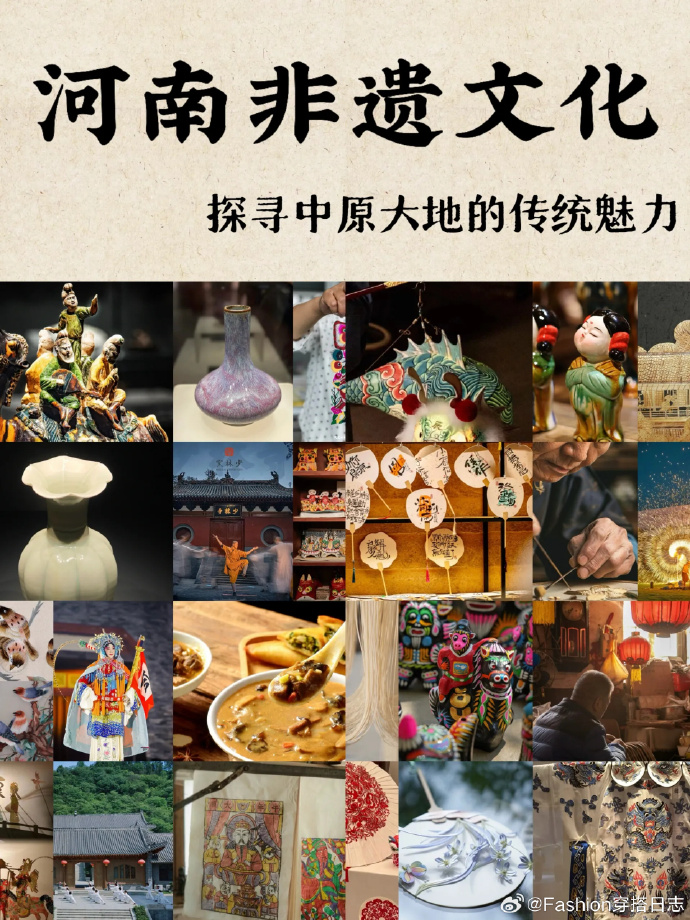
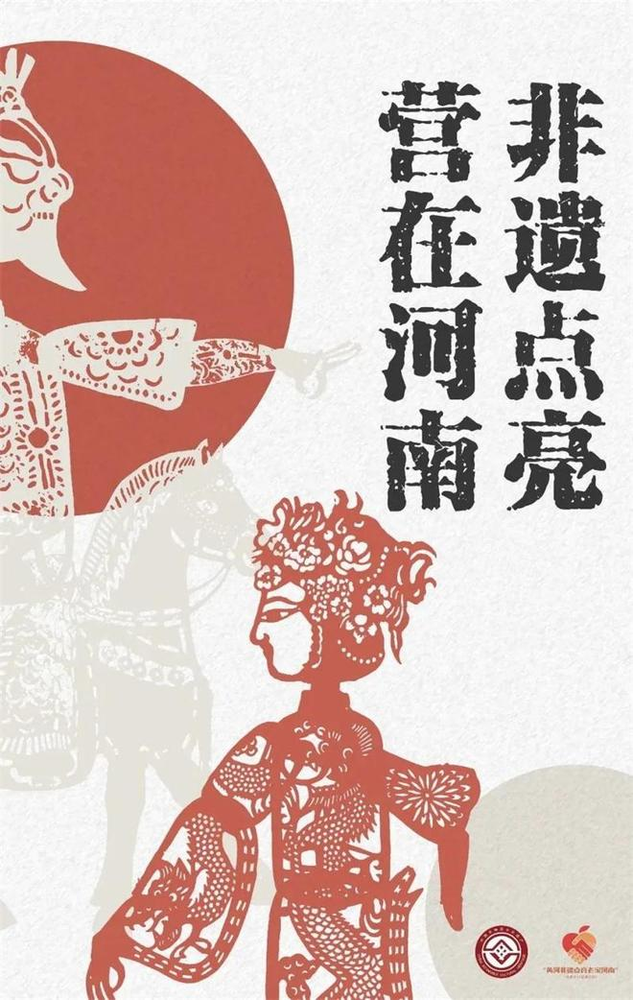

|  |  |
| 中原根魂|大河文明|文武盛地|九州心腹|返回首页 | |
河南文化：中原根脉，华夏摇篮
河南，坐落于黄河中下游，古称“豫州”，是中华文明重要的发祥地。这片土地承载着五千年的文明脉络，既是地理意义上的天下之中，也是文化层面的精神原点。从仰韶彩陶的纹样到殷墟甲骨的文字，从百家争鸣的思想到盛世王朝的气象，河南文化如同一部活的史书，记录着中华民族的成长历程。
文明之源：在大河臂弯里苏醒的远古曙光
黄河的滔滔河水，孕育了东亚大陆最早的农耕文明。新郑裴李岗文化的石磨盘与镰刀，诉说着八千年前先民驯化谷物的智慧；渑池仰韶村的彩陶器皿，用绚烂纹饰勾勒出母系氏族社会的繁荣图景。当历史演进到夏商时期，偃师二里头遗址矗立起“华夏第一王都”的宫城，开创了广域王权国家的先河；安阳殷墟则用庄严的青铜方鼎和神秘甲骨卜辞，宣告中国进入信史时代。这些深埋的遗址如同文明的地层，将神话传说转化为可触摸的历史真实。
思想之魂：照亮民族精神的思想星辰
这片平原曾是古代中国的思想熔炉。鹿邑人老子在此写下《道德经》，“道法自然”的哲思如清泉浸润中华文化的根基；商丘人庄子以《逍遥游》的瑰丽想象，为后世开辟了精神自由的天地。法家代表韩非在新郑提出法治主张，墨家创始人墨子在鲁山传播兼爱思想。东汉洛阳太学的熹平石经统一儒家经典，宋代程颢、程颐在嵩阳书院奠基理学。这些思想家的智慧碰撞，塑造了中华民族独特的价值观与思维方式。
技艺之粹：改变文明进程的创造之光
河南先民的创造力在诸多领域绽放异彩。安阳殷墟的甲骨文，让汉字成为传承三千年的活化石；漯河人许慎的《说文解字》，首次系统破解文字密码。南阳人张衡造出地动仪，精准探测远方地震；北宋汴京的工匠，将活字印刷、指南针技术推向成熟。从杜甫“安得广厦千万间”的沉郁诗篇，到龙门石窟卢舍那大佛的慈悲微笑，从开封官窑青瓷的雨过天青色，到禹州钧窑“入窑一色出窑万彩”的窑变奇迹，这片土地始终是艺术与科技创新的沃土。